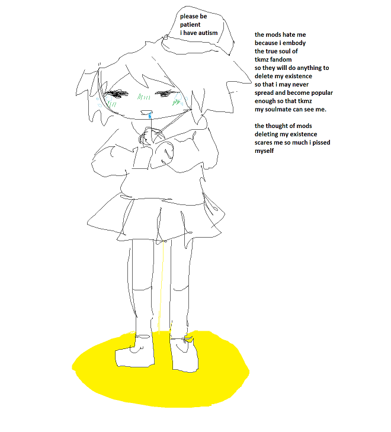
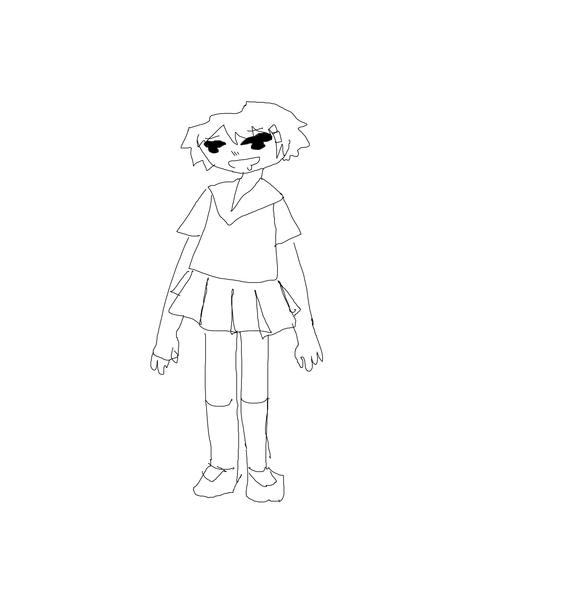
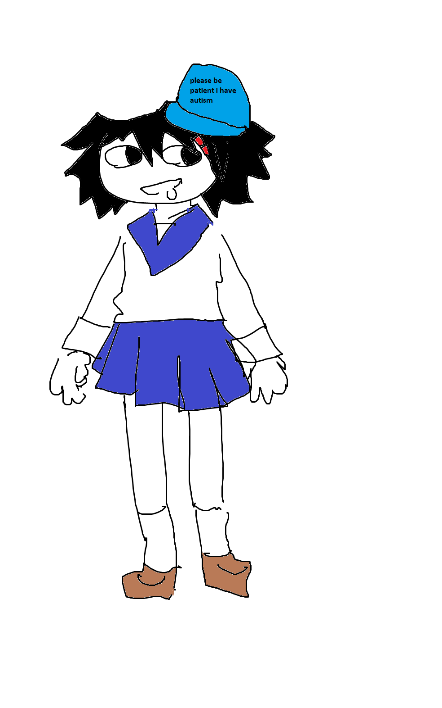
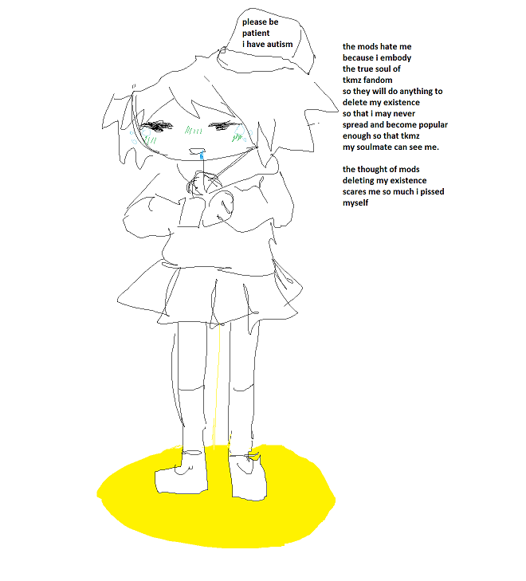
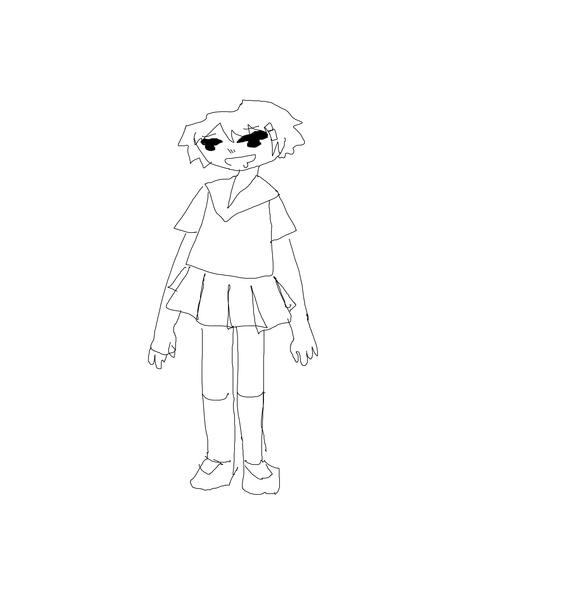
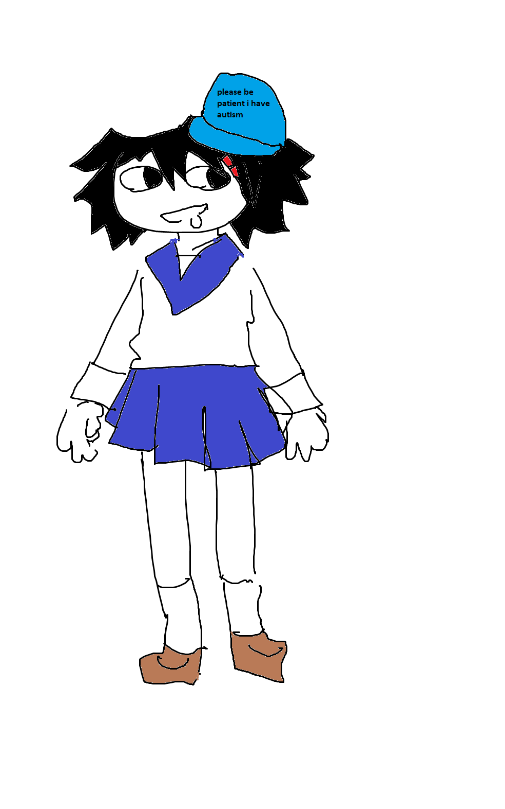

| Brainlet-chan was playing on her MineCraft server one night, trying to put the finishing touches on her base and looking proudly at the Fortnite skin she had downloaded online. |
The base was fully wired with redstone and completely automated. It had taken hours of time but she clicked away proudly at the last bits of blocks, a sideways smile on her face, tongue sticking out slightly as she angled her cursor in just the right way. |
Suddenly a player walked down the stairs across the room. He was wearing a fish skin. |
Brainlet-chan turned her mute button off on her mic. "Hey, get out of my base, i'm building right now." she told him annoyed. How had he even gotten in there. |
- Soon most of the base was in shambles and her automated areas were destroyed.
- Tears streamed down Brainlet-chan's cheeks as she screamed, her face blood red.
- Shimeji stood in the doorway holding a glass of scotch with ice in it.
Shimeji: "Brainlet-chan, what the hell is going on?" she demanded angrily. |
Brainlet-chan looked back at her, face red and tears streaming down her cheeks. "Help! Help me!" She screamed pointing at the screen. |
Shimeji had no idea what she was even looking at let alone what was going on. |
She rolled her eyes and walked away, going to her bedroom and locking the door as Brainlet-chan screamed furiously. |
Across the city in a dimly lit bedroom, Yuu sat clicking away at the base with her fish avatar, tears in her eyes as she struggled to contain her laughter. |


 




